It started as a privacy-policy compliance grader. The sales team kept asking it for more: research on a client before a call, a privacy report they could hand over, a deck tailored to the room, then pipeline and pricing. Each of those lived in a different tool, and each was assembled by hand. Could one platform do all of it without ever claiming more than the evidence supports?
- Consent journeys from a screen recording: upload a phone recording of an app's consent flow and get back every consent screen plus the full list of third-party SDKs it discloses. Frames are sampled in the browser and read by a vision model in parallel batches of 12, three at a time, under a hard cost cap. An offline path does the same with Swift and Apple Vision OCR
- Reports that refuse to over-claim: a generator assembles goals, opportunities, value against risk, consent today against consent needed, and swimlane data-flow diagrams into a PDF
- Decks tailored by chat: pick a branded HTML deck and ask for changes in plain English. Edits are applied by text offset, so the design, images and live demos survive
- Slides can be borrowed from any deck in a shared library, and a presenter view syncs two windows over a BroadcastChannel with a postMessage bridge into sandboxed frames
- A partner-facing edition with its own branding and tenant-scoped access to a merged knowledge base
Client research, privacy reports, tailored decks, pipeline and pricing in one place. A three-minute consent recording costs under $2 to read. A 40-slide deck is tailored in 8 parallel batches in 47 seconds for about $0.50.
- Next.js · Vercel
- Supabase (Postgres, RLS, storage, edge functions)
- Anthropic API (vision, citations)
- cheerio · react-pdf · Swift + Vision OCR
A slide that looks the same in any deck
Every sector has its own branded deck, and each one styles its slides through its own global stylesheet. Copying a slide from one deck into another moved the markup but not the look: a diagram that depended on classes defined only in its home deck arrived unstyled.
So a borrowed slide now travels with exactly what it is missing. On insert, the platform collects the CSS rules for every class the slide uses that the target stylesheet lacks, plus the keyframes those rules animate with, and any small layout script the slide's component needs. It never carries the deck controller, so the target deck still owns navigation.
Design tokens needed one more step. Some decks read their colour tokens with fallbacks, so copying a source deck's tokens onto :root would have quietly repainted the whole target deck. Borrowed tokens are scoped to the borrowed slide instead. All 20 slides unique to one sector's deck render identically inside another, and the library grew into one searchable list of several hundred slides, grouped by type, that the chat can suggest from for a few cents a turn.
Grounding every claim
A sales tool is under constant pressure to say yes. I built this one so it can't. The compliance section of a report can only say "no conflict found" or "needs review". That wording is computed in code from the evidence, never written by the model, and the word "compliant" is not available to it. Where the report recommends consent wording, it quotes competitors' published wording as the reference, and when there is none it labels the suggestion as best practice instead of dressing it up as precedent.
The recording reader taught the same lesson about personal data. Early on, the model copied a tester's email address off a password prompt it glimpsed for a few frames. Personal data is now stripped in code rather than by asking the model nicely, screens like that never keep an image, and every sampled frame is deleted once it has been read.
The rest follows the same rule of keeping the model away from anything that has to be exact. Adding a new client triggers a research brief and then tailors their goals automatically, so setup is no longer a task. Pricing quotes run on a copied, version-stamped build of the pricing engine instead of a live API, and the copy was checked against 300 random quotes before it replaced the original.